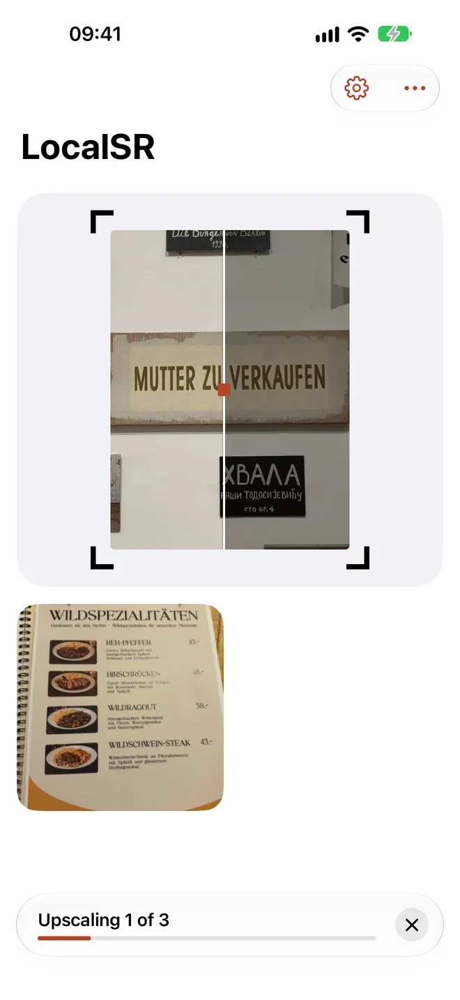
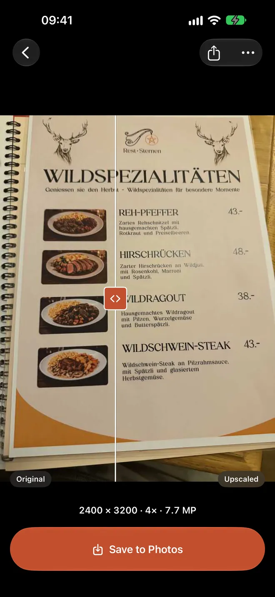
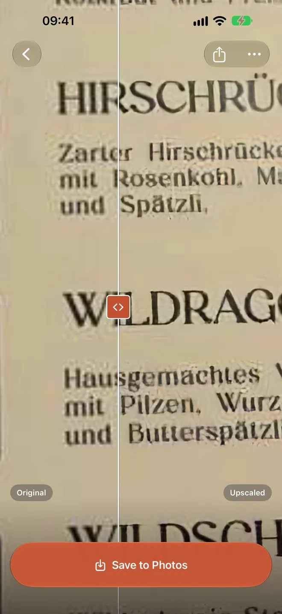

Android
Android 10 or later · phones
1.0.0 · APK, outside the Play Store
Download .apk · 28 MBMobile app
The same idea as the desktop app, made small: pick photos, and LocalSR upscales them 4x on the phone itself. There is no account, and the app has no network access, so your photos never leave the phone.
Android 10 or later · phones
1.0.0 · APK, outside the Play Store
Download .apk · 28 MBiOS 27 or later
1.0.0 · App Store
Get it on the App StoreDownload the file on the phone and open it. Android asks once whether your browser or file manager may install apps; allow it, then tap Install. Play Protect may scan the app first, because it does not come from the Play Store.
The APK does not update itself. New versions appear on this page, on GitHub and on itch.io, and install over the old one because they are signed with the same key.
Videos, Restore and the larger models are only in the desktop app.



Screenshots from the iPhone app with my own photos.
The app makes no network requests: no account, no analytics, no ads. The models are part of the app. On the iPhone it asks only to add photos to your library, not to read it. The privacy page has the details.
The phone app is free software under the MIT license. Its code is in mobile/ on GitHub, and its changes are in the mobile changelog. It has its own version numbers, separate from the desktop app.